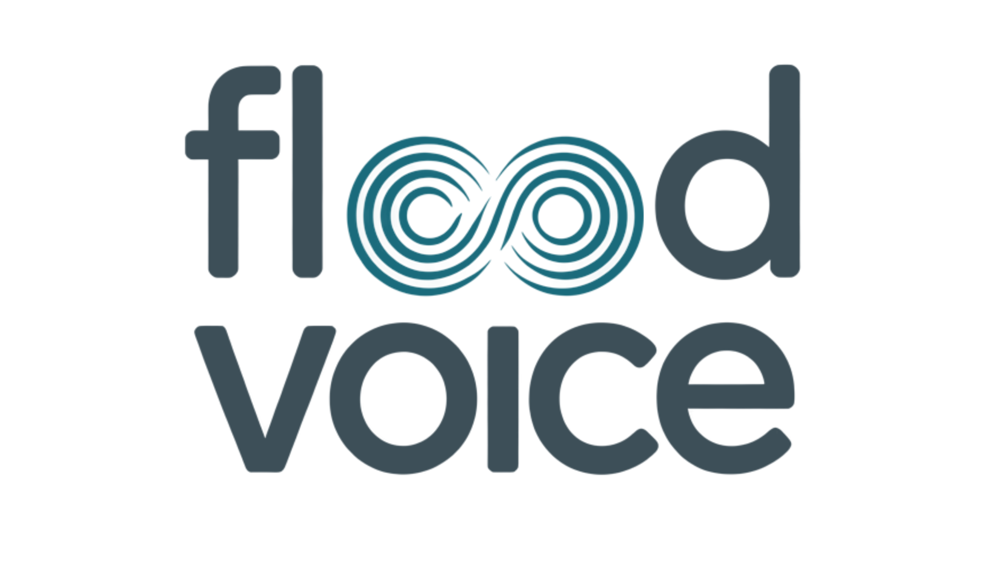

A visual identity system for FloodVoice — credible enough for crisis moments, human enough for everyday community engagement. Co-built with Red Hook and Rockaway in mind.

Five colors. None of them government blue. None of them emergency red. Each one chosen for trust, warmth, and cultural resonance with the communities FloodVoice serves.
Same palette, shifted weight. FloodVoice never changes its colors between phases — it changes which color leads.
Three typefaces, three registers. Display for warmth and authority. Body for multilingual reach. Mono for technical data — flood levels, zone statuses, timestamps.
8 core icons. Every icon paired with a text label — never icon-only. Clear-line for digital UI; filled for print and low-resolution contexts.
Buttons, alerts, and data widgets — each showing how the phase color system applies to real interface moments.
Accessibility isn't compliance. It's the single most powerful trust signal for communities with historical reasons to be skeptical of government-adjacent tools.
The entire sector defaults to a narrow band of government blues, institutional authority signals, and clinical urgency cues. FloodVoice breaks from all of them.